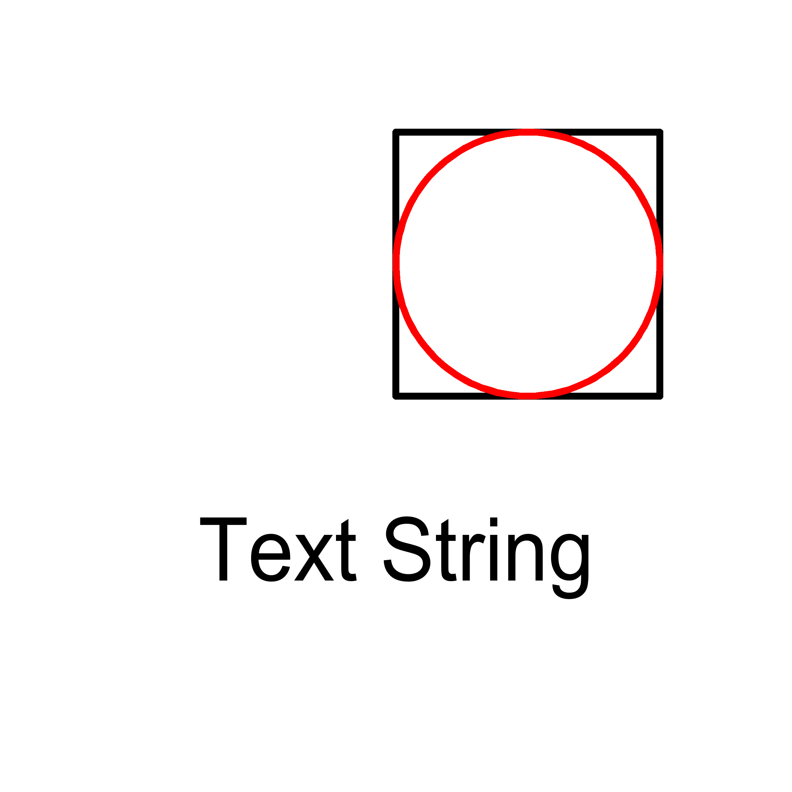

| Source image | Reference image |
|---|---|
 |
| Purpose | Test Result | Comments |
| getObjectExtent of the circle and the square: | NA | Pass if result is (150 150 250 250). |
| getObjectExtent of the circle: | NA | Pass if result is (150 150 250 250). |
| getObjectExtent of the square: | NA | Pass if result is (150 150 250 250). |
| getObjectExtent of text string: | NA | Pass if result is (75 72.2 225 112.4). |
| getObjectExtent of an empty APS: | NA | Pass if result is null. |